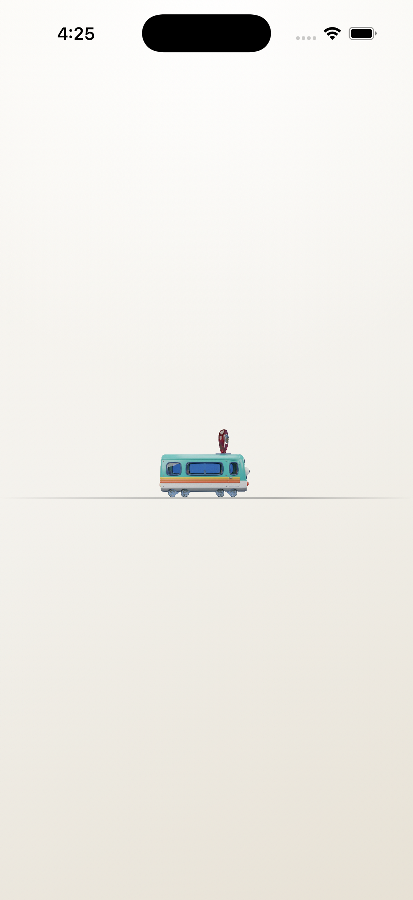
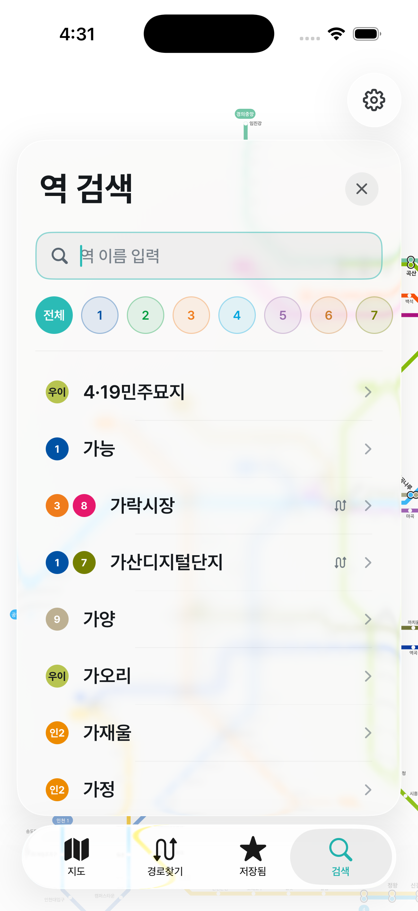
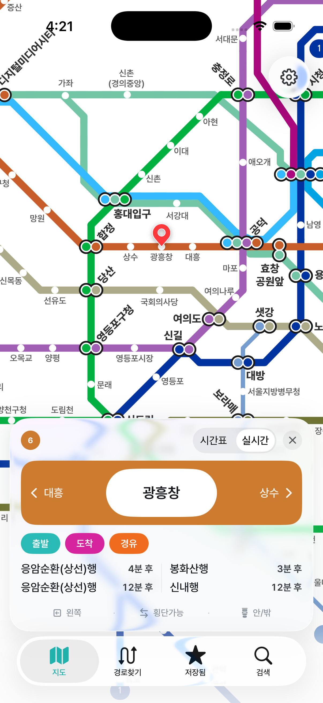
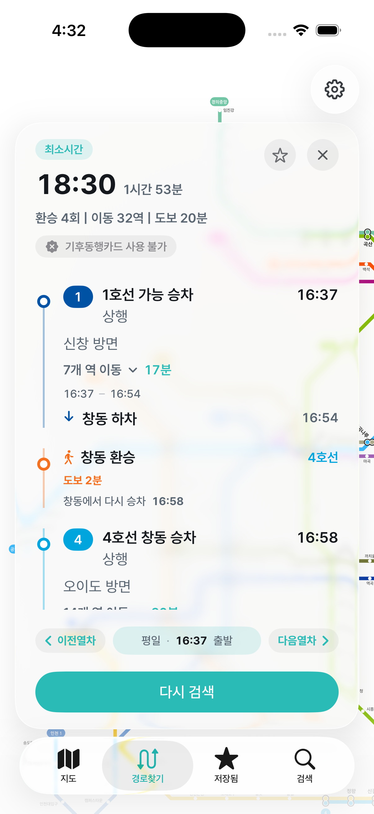
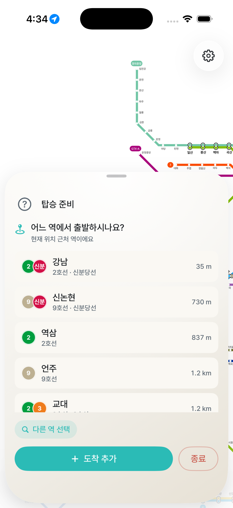

도착 정보 조회
사용자가 보고 있는 역과 추적 중인 열차에 한정하여 실시간 도착 정보를 조회합니다. 대량의 일괄 폴링 대신, 화면 컨텍스트 기반의 절제된 호출만 발생합니다.
핵심 기능
현재 역, 다음 역, 남은 정거장 수, 환승 카운트다운을 역 단위로 보여줍니다. 퍼센트가 아닌 ‘역’이 사용자의 진행 모델이 됩니다.
최소 시간·최소 환승·최소 도보 등 결정에 필요한 후보를 정리하고, 출발 시간과 다음 열차 단위로 빠르게 비교할 수 있습니다.
역을 누르면 시간표·실시간·노선·출구 정보를 한 카드에서 확인합니다. 결정과 탑승 사이의 마찰을 최소화했습니다.
화면 둘러보기
모든 화면은 iOS 26 시뮬레이터 기준으로 캡처되었으며 현재 빌드의 인터페이스와 일치합니다.

앱 진입 시 정적 일러스트와 함께 노선 데이터를 비동기로 준비합니다.
수도권 전 노선을 단일 인지 지도로 제공합니다. 하단 탭에서 경로·저장·검색으로 이동합니다.

노선 필터와 한글 입력으로 역을 빠르게 좁힙니다. 환승역은 라인 배지로 즉시 식별됩니다.

출발·도착·경유 분기, 시간표/실시간 토글, 방면별 다음 도착이 한 카드에 정리됩니다.

최소 시간 후보를 우선 노출하고, 출발 시각과 환승 거리를 함께 보여줍니다.

현재 위치 기반으로 출발역 후보를 거리순으로 제시합니다. 도보 분기와 환승역을 함께 표기합니다.
현재 역 / 다음 역 / 환승을 라인 스트립으로 표현합니다. 화면을 잠가도 라이브 액티비티가 이어집니다.
잠금 화면과 다이나믹 아일랜드에서 노선·방향·다음 역을 즉시 확인합니다.
데이터 활용
사용자가 보고 있는 역과 추적 중인 열차에 한정하여 실시간 도착 정보를 조회합니다. 대량의 일괄 폴링 대신, 화면 컨텍스트 기반의 절제된 호출만 발생합니다.
탑승 중에는 최근 정차 역과 방향을 주기적으로 검증해 잘못된 방향 탑승 위험을 줄입니다. 추적이 종료되면 호출도 즉시 멈춥니다.
사용자가 명시적으로 허용한 경우에만 환승·하차 임박 시점을 계산하기 위해 도착 정보를 확인합니다. 알림 동의가 없으면 호출하지 않습니다.
요청은 사용자 인터랙션과 라이브 액티비티 갱신 주기에 종속됩니다. iOS 백그라운드 정책을 따르며, 화면이 꺼진 상태에서는 갱신 빈도를 낮춥니다.
개인정보 · 보안
탑승 준비 시 가까운 역을 추천하기 위해 ‘앱 사용 중에만’ 위치를 요청합니다. 지속 추적은 하지 않습니다.
환승·하차 임박 알림은 사용자 동의 후에만 활성화되며, 추적 종료와 동시에 자동으로 종료됩니다.
즐겨찾기·최근 검색 등 사용자 설정은 기기 내부에 저장됩니다. 별도 계정과 외부 서버 전송이 없습니다.
실시간 도착 응답은 화면 표시 직후 폐기되며, 로그·분석 목적으로 영구 보관하지 않습니다.
앱 사용 중 불편한 점, 추가되었으면 하는 기능, 협업이나 문의 사항 등 어떤 내용이든 환영합니다. 메일로 답장 드리겠습니다.
개발자에게 메일 보내기